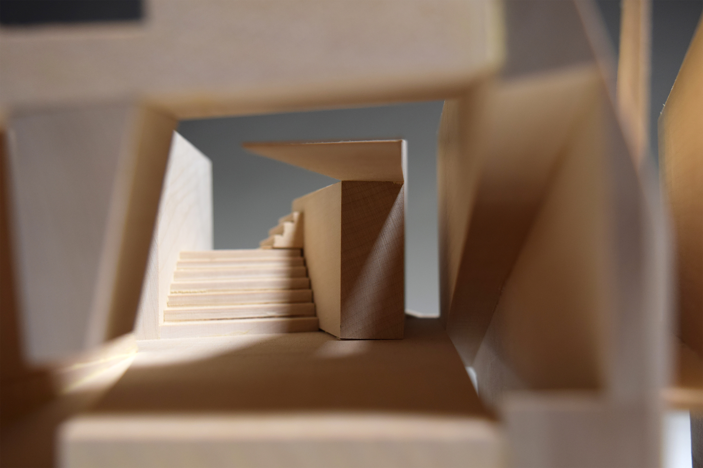
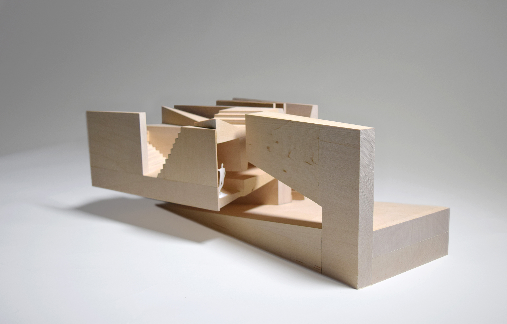
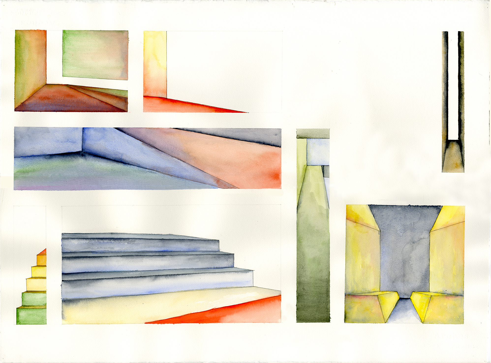
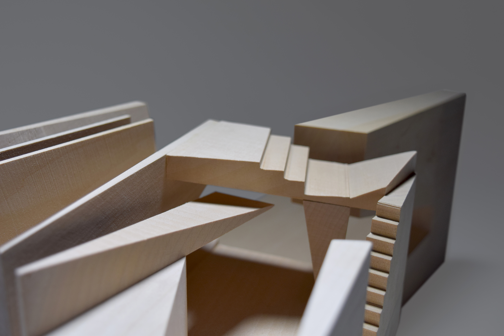
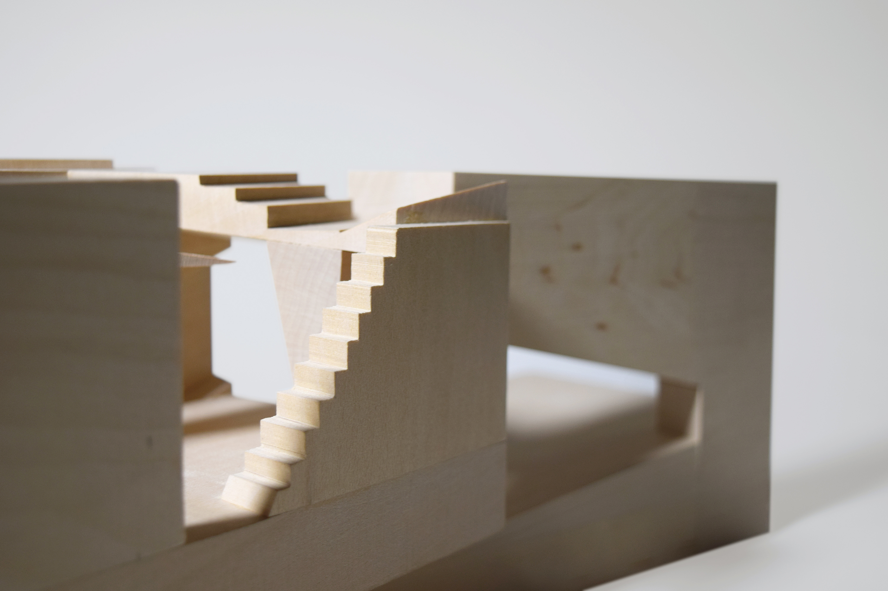

Gatehouse
Yale College Design Studio
Fall 2014
Given a site on the Gowanus Canal in Brooklyn, the project focused on designing a gatehouse for an unusual protagonist. In my interpretation, the gatekeeper is the titular character from Samuel Taylor Coleridge's "The Rime of the Ancient Mariner." The poem is split into six parts, and each becomes a sectional moment that recreates the psychological or emotional state of the episode.



